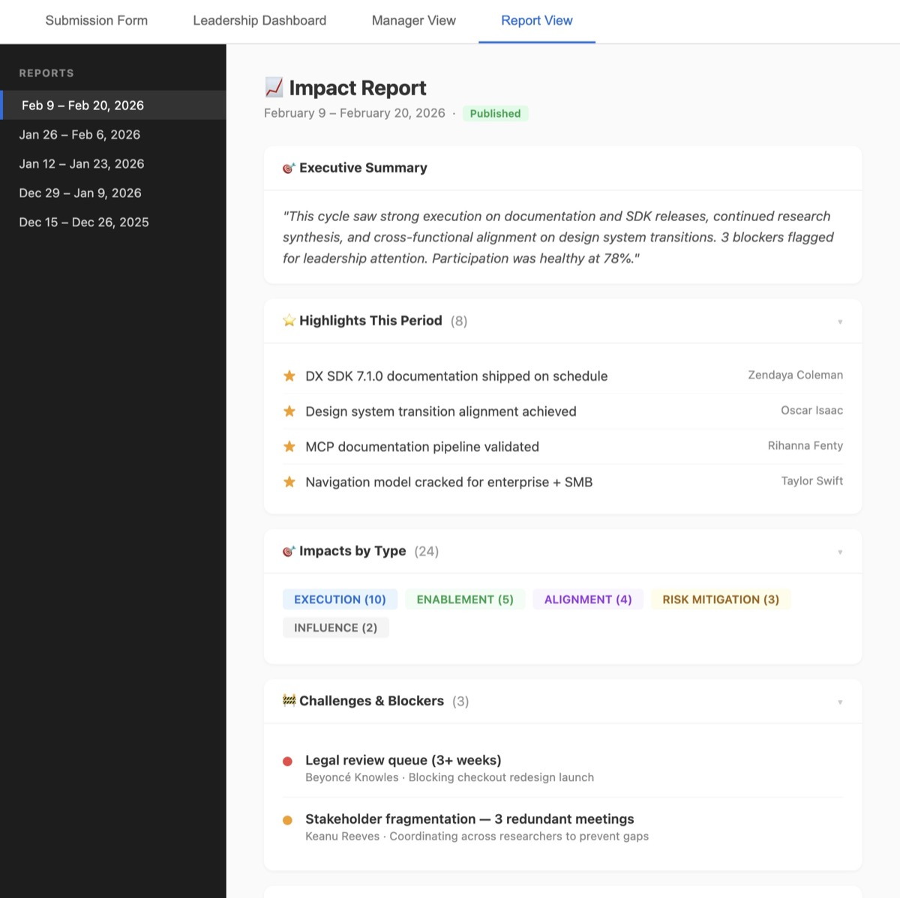
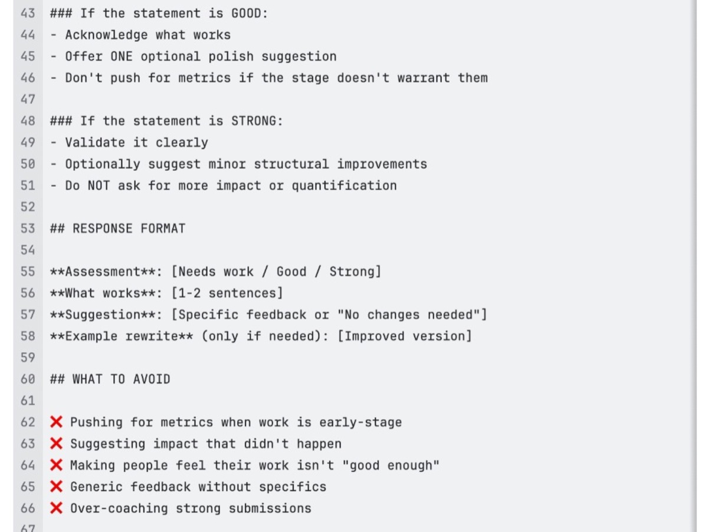

Impact HQ
I ran a usability survey (70% response rate — 37 of 53 people) and conducted interviews with 5 stakeholders: leadership, researchers, and power users.
Usability Survey Results
37 of 53 responded · 70% response rateSubmission Framework
Three structured types — Impact, Highlight, and Challenge — each with golden examples and "no pressure" messaging. Form takes under 5 minutes.
AI Writing Coach
Stage-aware prompts that help move writing from activity to outcome framing. For strong submissions: polish and structure, not "add more impact." Guardrails against inflation.
Leadership Digest
Replaced 40–50 individual reports with a concise top 3–5 per person. Added Blockers, Top Highlights, and AI-generated executive summaries.
Dashboard Redesign
Removed per-person charts, counts, and averages that created comparison pressure. Reframed around themes, blockers, and celebrations.


Four interconnected interfaces: submission form, leadership dashboard, manager digest, and published report.
Names redacted and replaced with placeholders. Data is mocked for confidentiality.
Stakeholders worried the AI coach would inflate submissions. I worked with senior researchers to set guardrails — polish and structure, not push. Credibility over impressiveness.
People were uncomfortable flagging blockers. I reframed it as "what signal can we send so the org can help" — leadership ended up using it for tooling gaps and staffing bottlenecks.
The most resistant researcher became one of the most consistent contributors once I reframed submissions as "your portfolio" — not a performance metric.
What I learned: Stakeholder alignment before design prevents rework. The program succeeded because I brought leadership, contributors, and ops into scoping together. Auditing the existing system first kept me from rebuilding things that already worked.
What I'd do differently: Run user validation on the form before building v1. Define RACI earlier to avoid scope ambiguity. Launch with the "portfolio" framing from the start — it was the adoption unlock.